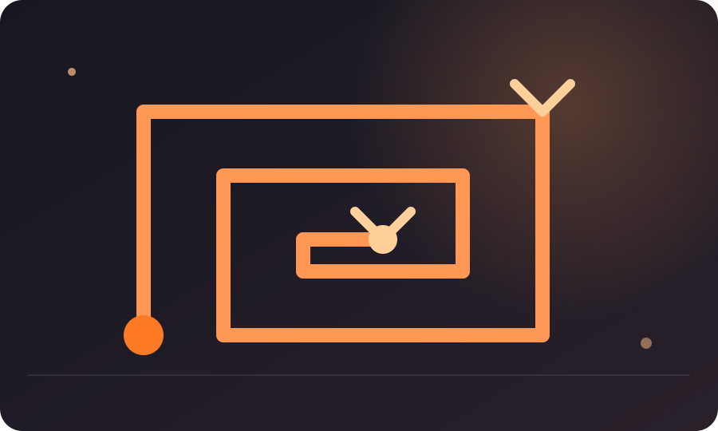

HÁBITOS
Cómo dejar de procrastinar
Una guía para descubrir qué estás evitando realmente y cambiar la tarea, el entorno o la emoción que mantiene el aplazamiento.

ESQUEMA VISUAL · HABITOS 3
El circuito del aplazamiento
Observa qué ocurre justo antes de posponer: la conducta suele cumplir una función inmediata.
Procrastinar no siempre significa pereza. A veces es una forma de evitar una tarea aburrida, incierta, difícil de evaluar o emocionalmente incómoda. Si solo respondes con más presión, puedes aumentar precisamente aquello que hace que la tarea resulte difícil de empezar.
Busca la función del aplazamiento
La pregunta “¿por qué soy así?” suele llevar a una etiqueta. Prueba con “¿qué obtengo al aplazar esto durante los próximos diez minutos?”. Tal vez obtienes alivio, entretenimiento, una pausa o la sensación de no poder fallar todavía.
El beneficio es inmediato; el costo llega después. Entender esa secuencia permite diseñar una intervención más precisa.
Cuatro tipos de tarea que suelen atascar
Tareas ambiguas: no sabes cuál es el primer paso. Tareas evaluativas: temes descubrir que no eres tan bueno. Tareas largas: no ves dónde termina. Tareas aburridas: la recompensa está demasiado lejos.
Cada una necesita una solución distinta. Dividir no arregla una tarea que produce miedo; preparar no arregla una tarea cuyo objetivo no está claro.
El diagnóstico de cinco minutos
Escribe: “estoy evitando ___ porque ___”. Después completa “si empezara, lo primero que tendría que hacer sería ___”. Si no puedes llenar el segundo espacio, el problema probablemente sea de claridad. Si puedes pero no lo haces, mira fricción, emoción o recompensa inmediata.
Cambia la tarea que estás evitando
Si temes redactar, empieza por preguntas. Si temes estudiar, comienza por un examen de práctica. Si temes llamar a alguien, escribe primero tres puntos que quieres decir. La meta es entrar por una puerta que no active toda la resistencia.
Diseña un límite para el alivio inmediato
No necesitas eliminar redes, videos o mensajes para siempre. Puedes decidir que antes de obtener esa recompensa harás una unidad concreta de trabajo. La regla funciona mejor si la unidad es pequeña y la recompensa está realmente disponible después.
Caso: el informe que nunca empezaba
Una persona lleva una semana evitando un informe. Descubre que no le cuesta escribir: le cuesta elegir qué datos incluir porque teme que el jefe los critique. La solución no es “ser más disciplinado”; es aclarar los criterios del informe y enviar una primera versión con una pregunta concreta.
La procrastinación había estado protegiendo a la persona de una decisión incierta. Resolver la incertidumbre reduce el aplazamiento.
Qué hacer cuando sabes exactamente qué estás evitando
A veces el diagnóstico es incómodo: no quieres hacer la tarea porque implica descubrir algo. Un correo puede revelar que el cliente está molesto; un simulacro puede mostrar que no estás preparado; una propuesta puede recibir un no. En esos casos, la procrastinación ofrece un beneficio emocional inmediato: mientras no empiezas, todavía no tienes el resultado.
La intervención puede consistir en separar exposición y resultado. Haz el primer paso con la intención de obtener información, no de demostrar capacidad. Envía la pregunta, realiza el simulacro o escribe el borrador sabiendo que su función es revelar dónde estás.
Si la tarea produce una ansiedad intensa y persistente que interfiere con varias áreas de tu vida, no reduzcas todo el problema a productividad. Hablar con un profesional puede ser más útil que acumular técnicas para obligarte a actuar.
La recompensa de aplazar
Cuando procrastinas, algo mejora durante unos minutos. Quizá desaparece la tensión de enfrentarte a una tarea difícil. Quizá recibes una recompensa rápida. Reconocer ese beneficio no significa justificarlo; explica por qué la conducta se repite aunque sepas que después habrá un costo.
Puedes competir con esa recompensa haciendo visible una ganancia temprana del trabajo. No tiene que ser “sentirme increíble”. Puede ser cerrar una decisión, obtener una respuesta, descubrir un error o tener un borrador que antes no existía.
La clave es acortar la distancia entre esfuerzo y evidencia. Cuando una tarea produce alguna señal de avance relativamente pronto, la alternativa de aplazar pierde parte de su atractivo.
Una intervención diferente para cada causa
Si aplazas por miedo a equivocarte, busca una versión de prueba. Si aplazas por aburrimiento, reduce la distancia entre trabajo y recompensa. Si aplazas por falta de claridad, define la primera decisión. Si aplazas porque estás agotado, revisa el momento y la carga.
La ventaja de diagnosticar es que deja de existir una única receta. No tienes que aplicar diez técnicas. Necesitas identificar qué barrera está presente hoy y tocar esa barrera concreta.
Si el problema no es la tarea
A veces la tarea es razonable pero tu capacidad está agotada. Si duermes poco, acumulas estrés o intentas resolver demasiadas cosas a la vez, la procrastinación puede aumentar. Antes de añadir otra técnica, revisa si estás pidiendo a tu atención más de lo que puede dar.
Una prueba antes de exigir más
Durante una semana, registra solo cuándo aparece el aplazamiento y qué ocurrió justo antes. No intentes corregirlo al mismo tiempo. Al final tendrás un pequeño mapa de tus momentos de mayor resistencia. Esa información puede ser más útil que una lista de técnicas porque te muestra cuándo y por qué necesitas intervenir.
Si sabes qué estás evitando, puedes intervenir sobre la tarea real en lugar de pelearte con una etiqueta.
MAPA DE PROCRASTINACIÓN
Identifica qué estás evitando
El aplazamiento puede tener causas diferentes. Elige la más cercana para probar una respuesta.
La respuesta aparecerá aquí.
Si la procrastinación se repite, registra cuándo aparece y qué alivio inmediato te ofrece aplazar. Esa observación ayuda a descubrir su función. No se trata de diagnosticarte ni de justificar el retraso, sino de elegir una intervención que responda al obstáculo real.
COMPRUEBA LO QUE TE LLEVAS
Estas preguntas no buscan ponerte una nota. Sirven para comprobar si la idea central del artículo quedó clara y, sobre todo, para decidir qué hacer después.
1. ¿Qué pregunta ayuda a diagnosticar la procrastinación?
2. Una tarea ambigua suele necesitar…
3. ¿La procrastinación siempre es aburrimiento?
¿Quieres llevar una idea a la práctica? Prueba el Reto de 7 días de IMPULSO o crea tu Ruta de crecimiento para convertir una reflexión en una acción concreta.
← VOLVER A IMPULSO